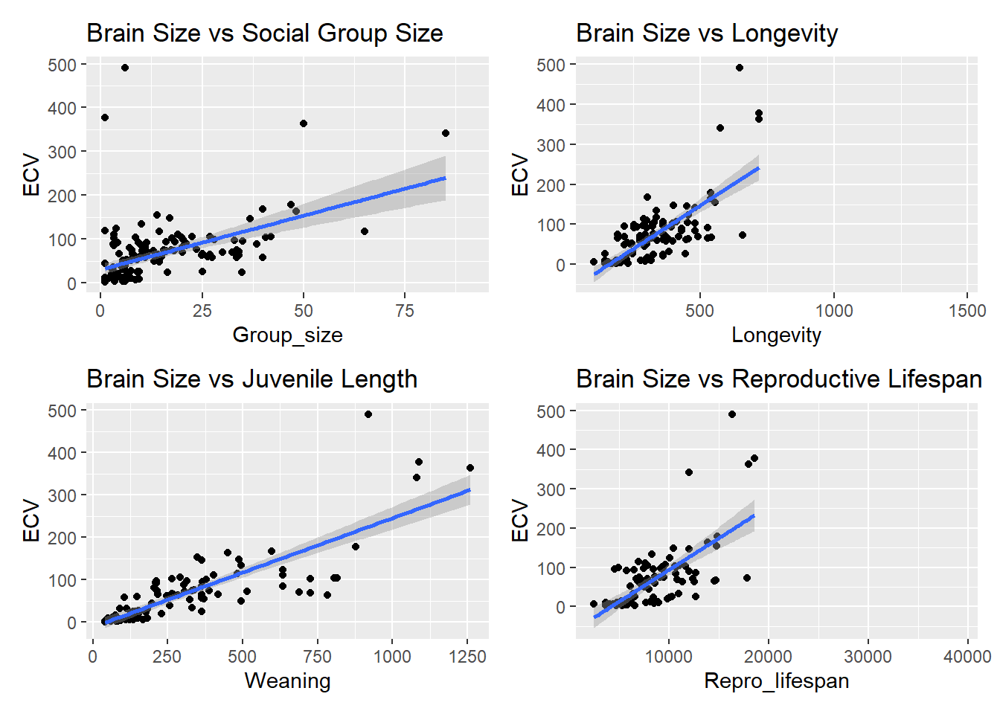

library(tidyverse)
library(skimr)
library(patchwork)
library(broom)
library(mosaic)
library(infer)Exercise-08-Linear-Regression
Exercise 08: Practice Simple Linear Regression
Step 1:
I first loaded in the packages that I am going to be using for this exercise.
I then used the read_csv() function from the {tiddyverse} package to load in the data set.
#Loading in data set
f <- "https://raw.githubusercontent.com/difiore/ada-datasets/main/Street_et_al_2017.csv"
d <- read_csv(f, col_names = TRUE)Rows: 301 Columns: 13
── Column specification ────────────────────────────────────────────────────────
Delimiter: ","
chr (2): Species, Taxonomic_group
dbl (11): Social_learning, Research_effort, ECV, Group_size, Gestation, Wean...
ℹ Use `spec()` to retrieve the full column specification for this data.
ℹ Specify the column types or set `show_col_types = FALSE` to quiet this message.I next did some exploratory data analysis to generate the five-number summary, mean, and the standard deviation (SD). I used the skim() function from the {skimr} package
mean
standard deviation (SD)
minimum (p0)
1st quartile (p25)
median (p50)
3rd quartile (p75)
maximum (p100)
#summary stats
skim(d)| Name | d |
| Number of rows | 301 |
| Number of columns | 13 |
| _______________________ | |
| Column type frequency: | |
| character | 2 |
| numeric | 11 |
| ________________________ | |
| Group variables | None |
Variable type: character
| skim_variable | n_missing | complete_rate | min | max | empty | n_unique | whitespace |
|---|---|---|---|---|---|---|---|
| Species | 0 | 1 | 10 | 41 | 0 | 301 | 0 |
| Taxonomic_group | 0 | 1 | 10 | 12 | 0 | 3 | 0 |
Variable type: numeric
| skim_variable | n_missing | complete_rate | mean | sd | p0 | p25 | p50 | p75 | p100 | hist |
|---|---|---|---|---|---|---|---|---|---|---|
| Social_learning | 98 | 0.67 | 2.30 | 16.51 | 0.00 | 0.00 | 0.00 | 0.00 | 214.00 | ▇▁▁▁▁ |
| Research_effort | 115 | 0.62 | 38.76 | 80.59 | 1.00 | 6.00 | 16.00 | 37.75 | 755.00 | ▇▁▁▁▁ |
| ECV | 117 | 0.61 | 68.49 | 82.84 | 1.63 | 11.82 | 58.55 | 86.20 | 491.27 | ▇▁▁▁▁ |
| Group_size | 114 | 0.62 | 13.26 | 15.20 | 1.00 | 3.12 | 7.50 | 18.23 | 91.20 | ▇▂▁▁▁ |
| Gestation | 161 | 0.47 | 164.50 | 38.00 | 59.99 | 138.35 | 166.03 | 183.26 | 274.78 | ▁▅▇▃▁ |
| Weaning | 185 | 0.39 | 311.09 | 253.08 | 40.00 | 121.66 | 234.16 | 388.78 | 1260.81 | ▇▃▁▁▁ |
| Longevity | 181 | 0.40 | 331.97 | 165.67 | 103.00 | 216.00 | 301.20 | 393.30 | 1470.00 | ▇▂▁▁▁ |
| Sex_maturity | 194 | 0.36 | 1480.23 | 999.23 | 283.18 | 701.52 | 1427.17 | 1894.11 | 5582.93 | ▇▆▂▁▁ |
| Body_mass | 63 | 0.79 | 6795.18 | 14229.83 | 31.23 | 739.44 | 3553.50 | 7465.00 | 130000.00 | ▇▁▁▁▁ |
| Maternal_investment | 197 | 0.35 | 478.64 | 292.07 | 99.99 | 255.88 | 401.35 | 592.22 | 1492.30 | ▇▅▂▁▁ |
| Repro_lifespan | 206 | 0.32 | 9064.97 | 4601.57 | 2512.16 | 6126.22 | 8325.89 | 10716.60 | 39129.57 | ▇▃▁▁▁ |
Step 2:
I used the ggplot() function to to graph/plot the following:
Brain size (ECV) as a function of social group size (Group_size)
Brain size (ECV) as a function of longevity (Longevity)
Brain size (ECV) as a function of juvenile period length (Weaning)
Brain size (ECV) as a function of reproductive lifespan (Repro_lifespan)
I used the wrap_plots() function from the {patchwork} package to compile the graphs together.
#ECV vs Group Size
d_scatterplot_ECV_Group_size <- d |>
ggplot(aes(x = Group_size, y = ECV)) +
geom_point(na.rm = TRUE) +
geom_smooth(method= lm) +
theme(legend.title=element_blank()) +
ggtitle("Brain Size vs Social Group Size")
#ECV vs Longevity
d_scatterplot_ECV_Longevity <- d |>
ggplot(aes(x = Longevity, y = ECV)) +
geom_point(na.rm = TRUE) +
geom_smooth(method= lm) +
theme(legend.title=element_blank()) +
ggtitle("Brain Size vs Longevity")
#ECV vs Weaning
d_scatterplot_ECV_Weaning <- d |>
ggplot(aes(x = Weaning, y = ECV)) +
geom_point(na.rm = TRUE) +
geom_smooth(method= lm) +
theme(legend.title=element_blank()) +
ggtitle("Brain Size vs Juvenile Length")
#ECV vs Repro_lifespan
d_scatterplot_ECV_Repro_lifespan <- d |>
ggplot(aes(x = Repro_lifespan, y = ECV)) +
geom_point(na.rm = TRUE) +
geom_smooth(method= lm) +
theme(legend.title=element_blank()) +
ggtitle("Brain Size vs Reproductive Lifespan")
#compiling graphs together
combined_scatterplots_ECV <- wrap_plots(d_scatterplot_ECV_Group_size,
d_scatterplot_ECV_Longevity,
d_scatterplot_ECV_Weaning,
d_scatterplot_ECV_Repro_lifespan)
combined_scatterplots_ECV
Step 3:
I calculated the ordinary least squares regression coefficients (β1 and β0) for Brain size (ECV) as a function of social group size (Group_size) by hand.
x <- Group_size
y <- ECV
I first selected the columns I was interested in so that I didn’t drop unnecessary rows.
β1 coefficient (Slope)
#COV(x,y)
ECV_Group_size_cov <-
sum((ECV_Group_size_table$Group_size - mean(ECV_Group_size_table$Group_size)) * (ECV_Group_size_table$ECV - mean(ECV_Group_size_table$ECV)) / (length(ECV_Group_size_table$Group_size) - 1))
#COR(x,y)
sd_Group_size <- sd(ECV_Group_size_table$Group_size)
sd_ECV <- sd(ECV_Group_size_table$ECV)
ECV_Group_size_cor <- (ECV_Group_size_cov / (sd_Group_size * sd_ECV))
#Beta1
ECV_Group_size_Beta1 <- (ECV_Group_size_cor * (sd_ECV/sd_Group_size))
#creating a table to label column
ECV_Group_size_Beta1_table <- tibble(Beta1 = ECV_Group_size_Beta1[1])
ECV_Group_size_Beta1_table# A tibble: 1 × 1
Beta1
<dbl>
1 2.46β0 coefficient (Y-Intercept)
#Beta0
ECV_Group_size_Beta0 <- (mean(ECV_Group_size_table$ECV) - (ECV_Group_size_Beta1 * mean(ECV_Group_size_table$Group_size)))
#creating a table to label column
ECV_Group_size_Beta0_table <- tibble(Beta0 = ECV_Group_size_Beta0[1])
ECV_Group_size_Beta0_table# A tibble: 1 × 1
Beta0
<dbl>
1 30.4Step 4:
Confirming that I calculated the β1 and β0 coefficient correctly by using the lm() function.
ECV_Group_size_lm <- lm(ECV ~ Group_size, data = ECV_Group_size_table)
ECV_Group_size_lm
Call:
lm(formula = ECV ~ Group_size, data = ECV_Group_size_table)
Coefficients:
(Intercept) Group_size
30.357 2.463 Step 5:
I calculated the β1 (Group_size) and β0 (y-intercept) coefficient using the lm() function for Brain size (ECV) as a function of social group size (Group_size) for the three different major radiations of primates:
Catarrhini
Platyrrhini
Strepsirhini
The β1 (Group_size) coefficient between all three radiations showed a positive relationship (positive slope) between ECV and group size. Platyrrhini and Strepsirhini have very similar β1, while Catarrhini was a bit smaller. The β0 (y-intercept) coefficient varied between all three radiations.
We could use an ANCOVA (analysis of covariance) to determine if the relationship between ECV and group size differs between the three radiations.
Catarrhini
ECV_Group_size_table_Catarrhines <- d |>
select(Taxonomic_group, ECV, Group_size) |>
filter(Taxonomic_group == "Catarrhini") |>
drop_na()
lm(ECV ~ Group_size, data = ECV_Group_size_table_Catarrhines)
Call:
lm(formula = ECV ~ Group_size, data = ECV_Group_size_table_Catarrhines)
Coefficients:
(Intercept) Group_size
83.421 1.146 Platyrrhini
ECV_Group_size_table_Platyrrhini <- d |>
select(Taxonomic_group, ECV, Group_size) |>
filter(Taxonomic_group == "Platyrrhini") |>
drop_na()
lm(ECV ~ Group_size, data = ECV_Group_size_table_Platyrrhini)
Call:
lm(formula = ECV ~ Group_size, data = ECV_Group_size_table_Platyrrhini)
Coefficients:
(Intercept) Group_size
16.181 1.965 Strepsirhini
ECV_Group_size_table_Strepsirhini <- d |>
select(Taxonomic_group, ECV, Group_size) |>
filter(Taxonomic_group == "Strepsirhini") |>
drop_na()
lm(ECV ~ Group_size, data = ECV_Group_size_table_Strepsirhini)
Call:
lm(formula = ECV ~ Group_size, data = ECV_Group_size_table_Strepsirhini)
Coefficients:
(Intercept) Group_size
8.176 1.841 Step 6:
For the first regression of ECV on social group size, I calculated by hand the following for the slope (β1) coefficient:
Standard Error (SE)
95% Confidence Interval
P Value (also the t statistic)
Code for Standard Error (SE)
# y = b1*x + b0: to get predicted valu
ECV_Group_size_predicted <- (ECV_Group_size_Beta1 * ECV_Group_size_table$Group_size) + ECV_Group_size_Beta0
#turned my predicted values into a table
ECV_Group_size_predicted_table <- as_tibble(ECV_Group_size_predicted)
#Sum of Squares for Error
SSE <- sum((ECV_Group_size_table$ECV - ECV_Group_size_predicted_table)^2)
#Degrees of Freedom for linear regression (n-2)
df <- nrow(ECV_Group_size_table) - 2
#Mean Squared Error
MSE <- SSE / df
#Sum of Squares for X
SSX <- sum((ECV_Group_size_table$Group_size - mean(ECV_Group_size_table$Group_size))^2)
#Standard Error of the slope (β1) coefficient
Beta1_SE <- sqrt(MSE / SSX)
# Creating a table to combine later
SE_Beta1_table <- tibble(Coefficients = "Group Size", Standard_Error = Beta1_SE[1])Code for 95% Confidence Interval
# Confidence Interval
# using qt since linear regressions use the t-Distribution
CI_Beta1 <- ECV_Group_size_Beta1 + qt(p = c(0.025, 0.975), df = length(ECV_Group_size_table$Group_size) - 2) * Beta1_SE
# Creating a table to combine later
CI_Beta1_table <- tibble(Coefficients = "Group Size", Lower_CI = CI_Beta1[1],Upper_CI = CI_Beta1[2])Code for P Value ( and t statistic)
#First need to calculate the t value
t_statistic <- ECV_Group_size_Beta1 / Beta1_SE
# multiplying by 2 for two-tailed
# lower.tail needs to FALSE????
p_statistic <- 2 * pt(t_statistic, df = length(ECV_Group_size_table$Group_size) - 2, lower.tail = FALSE)
# Creating a table to combine later
t_p_value_Beta1_table <- tibble(Coefficients = "Group Size", t_value = t_statistic[1], p_value = p_statistic[1])Combined table with Standard Error (SE) & 95% Confidence Interval & P Value
#combined table showing the SE & 95% CI & p value
step6_table <- SE_Beta1_table |>
inner_join(CI_Beta1_table) |>
inner_join(t_p_value_Beta1_table)
step6_table# A tibble: 1 × 6
Coefficients Standard_Error Lower_CI Upper_CI t_value p_value
<chr> <dbl> <dbl> <dbl> <dbl> <dbl>
1 Group Size 0.351 1.77 3.16 7.02 7.26e-11lm() function confirmation
I extracted this same information using the lm() function and the tidy(), glance(), confint() functions from the {broom} package.
step6_lm_table <- cbind(tidy(ECV_Group_size_lm), glance(ECV_Group_size_lm), confint(ECV_Group_size_lm)) |>
select("std.error", "2.5 %", "97.5 %","statistic", "p.value") |>
slice(2)
step6_lm_table std.error 2.5 % 97.5 % statistic p.value
Group_size 0.3508061 1.769874 3.156269 7.021176 7.259435e-11Step 7:
I used a permutation (1000 permutations) approach to generate a null sampling distribution for the slope (β1) coefficient. We need to permute brain size (ECV) and social group size (Group_size), which will help us break the relationship between brain size (ECV) and social group size (Group_size). I used the theory based method (standard error of the null sampling distribution and a t distribution) to calculate the p-value. Permutations do not resample.
#Used the do() loop to get the permutation distribution for the slope
#Permutations samples WITHOUT replacement
nperm <- 1000
perm <- do(nperm) * {
d_new <- d
d_new$Group_size <- sample(d_new$Group_size) #replace = FALSE
perm_lm <- lm(data = d_new, ECV ~ Group_size)
broom::tidy(perm_lm) |>
filter(term == "Group_size") |>
pull(estimate) #sampled slope (β1) coefficients
}
# I calculated the SE of the permutation distribution for the slope
perm_se <- sd(perm$result)
#I calculated the P-value of the permutation distribution for the slope
#original slope (β1) coefficient
observed_slope <- ECV_Group_size_Beta1
#permutation distribution t-value
perm_t_statistic <- observed_slope / perm_se
#p-value of the permutation distribution
#pt() ; cumulative probability
perm_pvalue <- 2 * pt(perm_t_statistic, df = length(ECV_Group_size_table$Group_size) - 2, lower.tail = FALSE)
p_value_perm_table <- tibble(Coefficients = "Group Size", p_value = perm_pvalue[1])
p_value_perm_table# A tibble: 1 × 2
Coefficients p_value
<chr> <dbl>
1 Group Size 0.00000537Step 8:
I used bootstrapping (1000 reps) to generate a 95% CI of the slope coefficient estimate and I did this using the {infer} package.
Quantile method
#bootstapping using the infer package
#bootstapping samples WITH replacement
alpha <- 0.05
p_lower <- alpha/2
p_upper <- 1 - (alpha/2)
boot_slope <- ECV_Group_size_table |>
specify(ECV ~ Group_size) |>
generate(reps = 1000, type = "bootstrap") |>
calculate(stat = "slope") |>
summarize(
Boot_mean = mean(stat),
Boot_se = sd(stat),
Boot_Lower_CI = quantile(stat, p_lower),
Boot_Upper_CI = quantile(stat,p_upper))
Q_boot_CI <- tibble(Coefficients = "Group Size",
Boot_Lower_CI = boot_slope$Boot_Lower_CI,
Boot_Upper_CI = boot_slope$Boot_Upper_CI)
Q_boot_CI# A tibble: 1 × 3
Coefficients Boot_Lower_CI Boot_Upper_CI
<chr> <dbl> <dbl>
1 Group Size 1.50 3.25Theory-based method
I used the mean and the standard error generated from the bootstrap above to calculate the 95% confidence intervals.
#use qnorm since sample size is larger that 30
TB_CI <- boot_slope$Boot_mean + c(-1, 1) * qnorm(1 - (alpha/2)) * boot_slope$Boot_se
TB_boot_CI <- tibble(Coefficients = "Group Size",
Boot_Lower_CI = TB_CI[1],
Boot_Upper_CI = TB_CI[2])
TB_boot_CI# A tibble: 1 × 3
Coefficients Boot_Lower_CI Boot_Upper_CI
<chr> <dbl> <dbl>
1 Group Size 1.53 3.31